Gameplay 部品（テンプレート用）
アクション・プラットフォーマー（横スクロールや 3D の足場ゲーム）のテンプレート用に作られた部品です。キャラクターの移動、体力、チェックポイント、ゴール、敵などが入っています。組み合わせるだけで「走って、跳んで、落ちたらやり直し、ゴールしたらクリア」の基本形が作れます。
追加する場所
インスペクターの コンポーネントを追加 を押し、Gameplay (12) を開くと、12 個が並びます。項目にマウスを乗せると、短い説明と、所属するモジュール名（RePlayEngine.Template.ActionPlatformer）がツールチップで出ます。
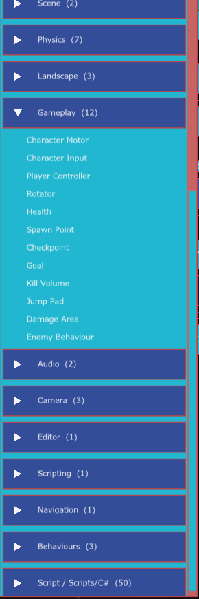
こんなときに使う
- キーボードやゲームパッドで動かせるキャラクターを、すぐ置きたいとき
- 落ちたら、途中のチェックポイントからやり直すステージを作りたいとき
- ジャンプ台、ダメージの床、追いかけてくる敵を置きたいとき
全体の組み合わせ
| やりたいこと | 使う部品 |
|---|---|
| プレイヤーを動かす | Character Input ＋ Character Motor ＋ Player Controller（と Collider） |
| 体力を持たせる | Health |
| やり直しの位置を決める | Spawn Point、Checkpoint |
| 落下でやり直し | Kill Volume |
| ゴールにする | Goal |
| ジャンプ台・ダメージの床 | Jump Pad、Damage Area |
| 敵を置く | Enemy Behaviour ＋ Nav Agent ＋ Damage Area ＋ Health |
足りない設定は診断に出ます
必要な設定が足りないときは、下のパネルの Validation & Diagnostics > Validation に赤い ERROR で出ます。たとえば、次のようなメッセージです。
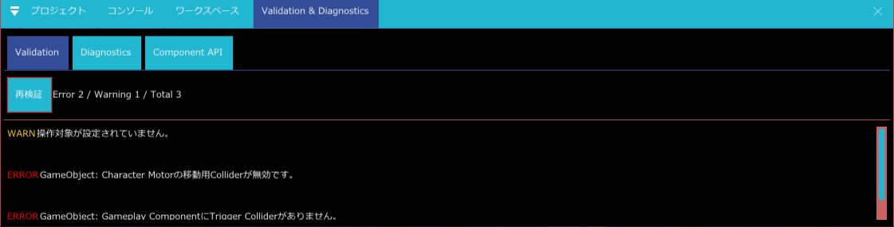
- 「Character Motorの移動用Colliderが無効です。」（種類
MOTOR_PRIMARY_MISSING）：Character Motor の 移動用 Collider が選ばれていません。インスペクターにも同じ内容が赤字で出ます。 - 「Gameplay ComponentにTrigger Colliderがありません。」：Checkpoint や Kill Volume などを付けたのに、同じ GameObject に トリガー がオンの Collider がありません。
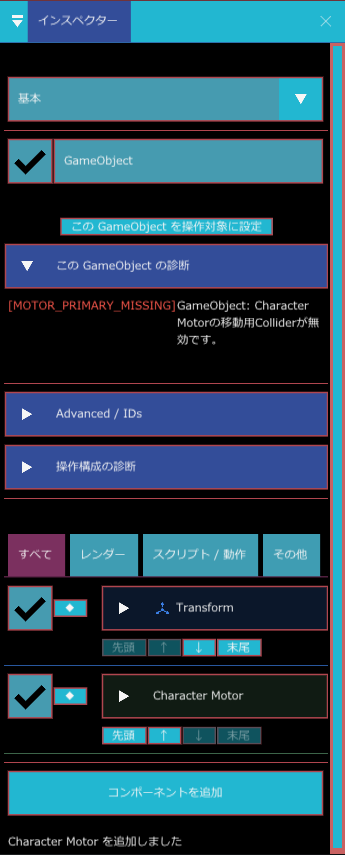
Trigger を使う部品の共通の準備
Checkpoint、Goal、Kill Volume、Jump Pad、Damage Area は、Trigger（通り抜けられる当たり判定）に入った物に反応します。共通の準備は次のとおりです。
- その GameObject に Collider（Box Collider など）を付けます。
- Collider の トリガー をオンにします（Collider の共通項目）。オフだと何も起きません。
- 反応させたい相手にも Collider を付けます。相手側の レイヤー と、こちらの 衝突する相手 の設定が噛み合っているか確かめます（レイヤー）。
- 各部品の 反応する対象（レイヤーの選択）で、反応させる相手のレイヤーを選びます。初期状態は「すべて」です。
Character Motor（キャラクター移動）
移動、加速・減速、重力、ジャンプ、接地を担当します。プレイヤーにも敵にも使えます。Rigidbody の物理で動かすのではなく、Collider を使って地形との接触を調べながら動かす方式です。
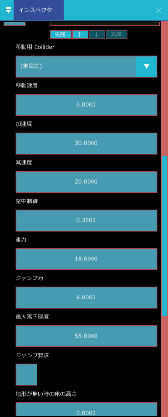
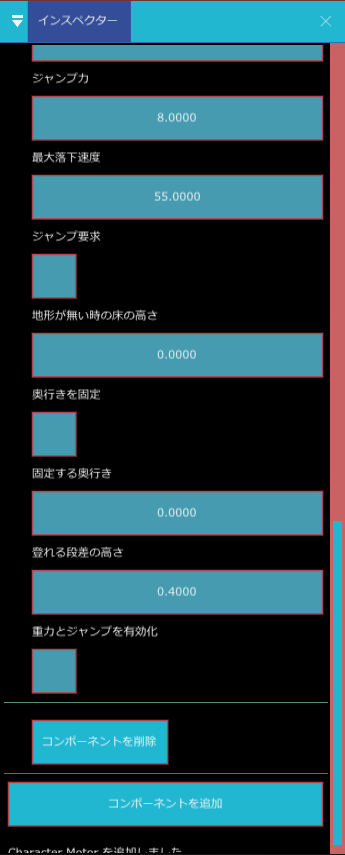
| 表示名 | 内部名 | 種類 | 既定値 | 範囲 | 説明 |
|---|---|---|---|---|---|
| 移動用 Collider | primary_collider_key | Collider の選択 | （未選択） | 移動・接地・押し戻しに使う Collider です。Sphere / Capsule / Box / Mesh から選びます（Landscape とトリガーは出ません）。自動では選ばれません。未設定だと地形との当たり判定を行いません。Mesh は外接球で近似されます | |
| 移動速度 | move_speed | 小数 | 6 | 0〜30 | 1 秒あたりの最高速度（m/秒） |
| 加速度 | acceleration | 小数 | 30 | 0〜120 | 最高速度に達するまでの勢いです。大きいほど素早く走り出します |
| 減速度 | deceleration | 小数 | 20 | 0〜120 | 入力をやめたときに止まる勢いです。小さいと滑って止まります |
| 空中制御 | air_control | 小数 | 0.35 | 0〜1 | 空中での方向転換のしやすさ。0 で空中は曲がれず、1 で地上と同じです |
| 重力 | gravity | 小数 | 18 | 0〜100 | 下向きの加速度 |
| ジャンプ力 | jump_power | 小数 | 8 | 0〜50 | ジャンプの初速 |
| 最大落下速度 | maximum_fall_speed | 小数 | 55 | 0〜200 | 落下の速さの上限 |
| ジャンプ要求 | jump_requested | オン・オフ | オフ | オンにすると、次の更新で 1 回だけジャンプして自動でオフに戻ります。C# からは RequestJump = true で跳ばせます | |
| 地形が無い時の床の高さ | fallback_ground_y | 小数 | 0 | 足元に地面の Collider が無いときに、床とみなす高さ（Y）です | |
| 奥行きを固定 | lock_plane_z | オン・オフ | オフ | 横スクロール用。毎回 Z の速度をゼロにし、位置を次の「固定する奥行き」へ戻します | |
| 固定する奥行き | plane_z | 小数 | 0 | 上の設定で固定する Z の値 | |
| 登れる段差の高さ | max_step_height | 小数 | 0.4 | 0〜2 | これ以下の段差は登れます。大きくすると壁の上へ乗ってしまい、0 だと段差を登れません |
| 重力とジャンプを有効化 | vertical_physics | オン・オフ | オフ | オフだと重力もジャンプも働きません。落下やジャンプが必要なときは必ずオンにします |
使い方の例：キャラクターを動かせるようにする
- キャラクターの GameObject に Capsule Collider を追加します。
- Character Motor を追加し、移動用 Collider の欄でその Capsule Collider を選びます。
- 重力とジャンプを使うなら 重力とジャンプを有効化 をオンにします。
- 横スクロールなら 奥行きを固定 をオンにし、固定する奥行き にキャラクターの Z を入れます。
- Character Input と Player Controller を追加すれば、キーやパッドで動きます。
Character Input（入力）
操作デバイス、または C# スクリプトや AI から渡された「今フレームの操作」を保持する箱です。移動そのものは行いません。移動は Character Motor が、両者の橋渡しは Player Controller が行います。
| 表示名 | 内部名 | 種類 | 既定値 | 範囲 | 説明 |
|---|---|---|---|---|---|
| 入力を受け付ける | input_enabled | オン・オフ | オン | オフにすると入力を止められます（会話中や、演出中の操作禁止に使います） | |
| 入力元 (0:デバイス 1:外部) | input_source | 整数 | 0 | 0〜1 | 0 はキーボード・ゲームパッドから読みます。1 は外部（C# スクリプトや AI が書き込んだ値）を使います |
| プレイヤー番号 | local_player_slot | 整数 | 0 | 0〜3 | 何番目のプレイヤーの入力を読むか。現在は 0 のみ使われます |
Player Controller（入力と移動の接続）
Character Input の入力を Character Motor に渡します。カメラの向きを基準にした移動や、進行方向へ振り向く動きも担当します。同じ GameObject に Character Input と Character Motor の両方が必要です。足りないと動かず、警告がログに出ます。
| 表示名 | 内部名 | 種類 | 既定値 | 範囲 | 説明 |
|---|---|---|---|---|---|
| 旋回速度 (度/秒) | turn_speed_degrees | 小数 | 720 | 0〜1440 | 進行方向へ向きを変える速さ |
| ダッシュ倍率 | dash_multiplier | 小数 | 1 | 0.1〜5 | ダッシュ中に、移動速度へ掛ける倍率。1 だとダッシュしても速くなりません |
| カメラ基準で移動 | camera_relative | オン・オフ | オン | オンだと「上」が画面の奥になります。オフだと、世界の座標の向きのままです | |
| 進行方向へ向く | rotate_towards_movement | オン・オフ | オン | 動いている向きへ、キャラクターを振り向かせます |
Rotator（回転テスト）
GameObject を一定の速さで回し続ける、動作確認用の部品です。回る足場や、くるくる回る見本にも使えます。
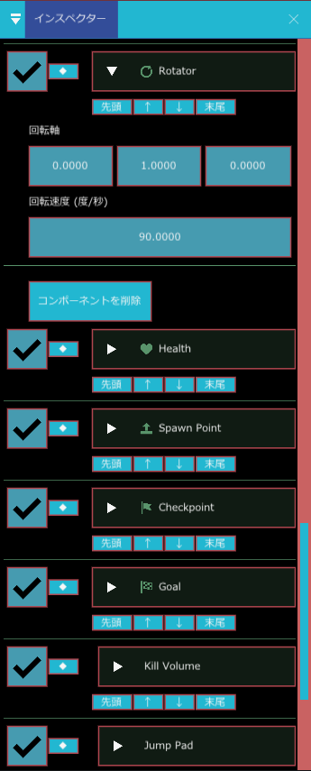
| 表示名 | 内部名 | 種類 | 既定値 | 範囲 | 説明 |
|---|---|---|---|---|---|
| 回転軸 | axis | 3 つの数 | 0, 1, 0 | 回る軸の向き。0, 1, 0 は縦の軸（Y 軸）を中心に回ります | |
| 回転速度 (度/秒) | degrees_per_second | 小数 | 90 | −1440〜1440 | 1 秒あたりに回る角度。マイナスで逆向き |
縦軸（Y）の回転には向いています。複雑な斜めの軸では、軸ごとの角度を足していく実装のため、思った通りに回らないことがあります。
Health（体力）
最大体力、現在体力、無敵の状態を持ちます。Damage Area や Kill Volume がダメージを与える相手になります。プレイヤーにも敵にも付けます。
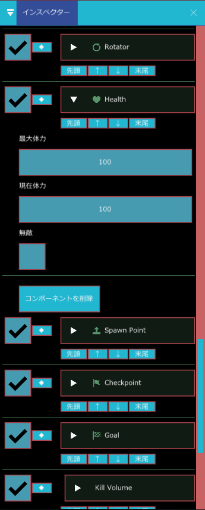
| 表示名 | 内部名 | 種類 | 既定値 | 範囲 | 説明 |
|---|---|---|---|---|---|
| 最大体力 | max_health | 整数 | 100 | 1〜100000 | 体力の上限。下げると、現在体力も上限に合わせて減ります |
| 現在体力 | current_health | 整数 | 100 | 0〜100000 | いまの体力 |
| 無敵 | invulnerable | オン・オフ | オフ | オンだとダメージを受けません |
Spawn Point（開始・復帰地点）
チェックポイントを通る前のやり直し先（復帰地点）を登録します。ゲーム開始時にプレイヤーをここへ動かす部品ではありません。開始位置には、プレイヤーを最初から置きたい場所に置きます。
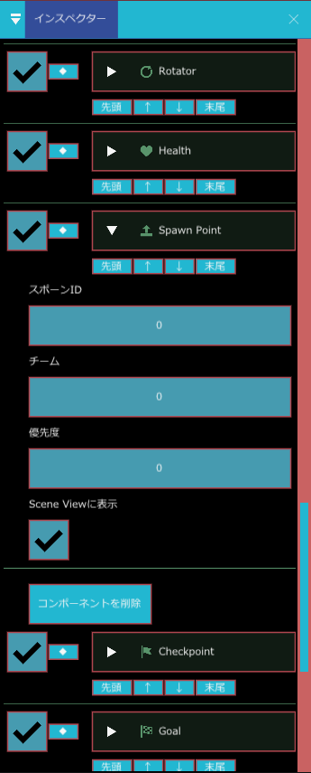
| 表示名 | 内部名 | 種類 | 既定値 | 説明 |
|---|---|---|---|---|
| スポーンID | spawn_id | 整数 | 0 | この地点を見分ける番号 |
| チーム | team | 整数 | 0 | この地点を使うチームの番号 |
| 優先度 | priority | 整数 | 0 | Spawn Point が複数あるとき、数の大きい方が使われます。同じ数なら先に登録されたものが残ります |
| Scene Viewに表示 | debug_draw | オン・オフ | オン | シーンビューに位置の目印を描きます |
チェックポイントを 1 つでも通ると、そちらが優先されます。どちらも無い場合、Kill Volume はダメージだけ与えて復帰はしません。
Checkpoint（チェックポイント）
Trigger に入った対象の復帰地点を、ここへ更新します。通ったあとに Kill Volume で落ちると、この地点からやり直します。共通の準備が必要です。
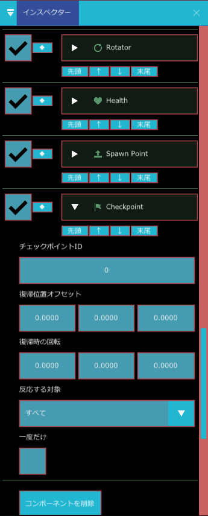
| 表示名 | 内部名 | 種類 | 既定値 | 説明 |
|---|---|---|---|---|
| チェックポイントID | checkpoint_id | 整数 | 0 | 見分ける番号（イベントに付きます） |
| 復帰位置オフセット | respawn_position_offset | 3 つの数 | 0, 0, 0 | 復帰する位置を、この GameObject の位置からどれだけずらすか。床にめり込まないよう、少し上（Y に 0.5 など）にします |
| 復帰時の回転 | respawn_rotation | 3 つの数 | 0, 0, 0 | 復帰したときに向く角度（Euler 角）。内部ではラジアンで保持します |
| 反応する対象 | target_mask | レイヤーの選択 | すべて | 反応させる相手のレイヤー |
| 一度だけ | one_shot | オン・オフ | オフ | オンにすると、一度反応したあとは二度と更新しません |
シーンビューの右クリックメニューの Play From Checkpoint から、チェックポイントの位置からゲームを始められます（シーンに Checkpoint がある、またはテンプレート部品を表示しているときに出ます）。
Goal（ゴール）
対象が Trigger に入ったとき、「ゴールに着いた」というイベントを出します。共通の準備が必要です。
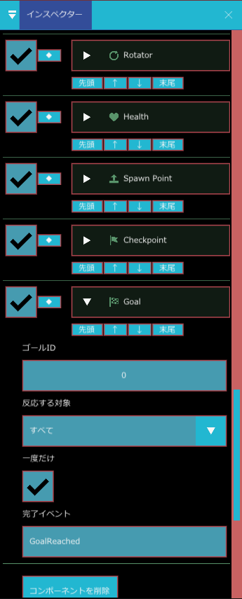
| 表示名 | 内部名 | 種類 | 既定値 | 説明 |
|---|---|---|---|---|
| ゴールID | goal_id | 整数 | 0 | 見分ける番号 |
| 反応する対象 | target_mask | レイヤーの選択 | すべて | 反応させる相手のレイヤー |
| 一度だけ | one_shot | オン・オフ | オン | オンだと、一度だけ反応します |
| 完了イベント | completion_event | 文字列 | GoalReached | ゴールしたときに発行するシーン切り替えのイベント名。空欄にすると発行しません |
「完了イベント」の名前は、シーンの切り替えの仕組み（Scene Flow）の遷移の条件として使われます。Scene Flow に同じ名前のイベントで別のシーンへ進む設定があれば、ゴールに入った瞬間にそのシーンへ切り替わります。設定が無ければ、記録が残るだけで、画面は変わりません。クリア表示などは、このイベントを受けるゲーム側の処理で作ります。
Kill Volume（落下・即死領域）
Trigger に入った対象へダメージを与え、設定に応じて復帰地点へ戻します。落下エリアや危険地帯に使います。共通の準備が必要です。
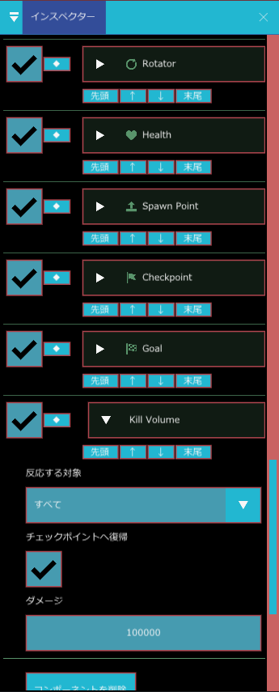
| 表示名 | 内部名 | 種類 | 既定値 | 範囲 | 説明 |
|---|---|---|---|---|---|
| 反応する対象 | target_mask | レイヤーの選択 | すべて | 反応させる相手のレイヤー | |
| チェックポイントへ復帰 | respawn_at_checkpoint | オン・オフ | オン | オンだと、入った対象を復帰地点（通過済みの Checkpoint、無ければ Spawn Point）へ移し、Health を満タンに戻します | |
| ダメージ | damage_amount | 整数 | 100000 | 0〜1000000 | 入ったときに与えるダメージ。相手に Health があるときだけ与えます |
使い方の例：落ちたらやり直す
- ステージの下に、大きな Box Collider を付けた GameObject を置き、トリガー をオンにします。
- Kill Volume を追加します（チェックポイントへ復帰 はオンのまま）。
- ステージのスタート地点に Spawn Point を、途中に Trigger の Checkpoint を置きます。
- プレイヤーに Health を付けます。実行して落ちると、Checkpoint を通っていればそこから、通っていなければ Spawn Point からやり直します。
Jump Pad（ジャンプ台）
Trigger に入った Character Motor を持つ対象へ、指定した方向に勢いを与えます。上向きだけでなく、斜めにも飛ばせます。共通の準備が必要で、相手には Character Motor が必要です。
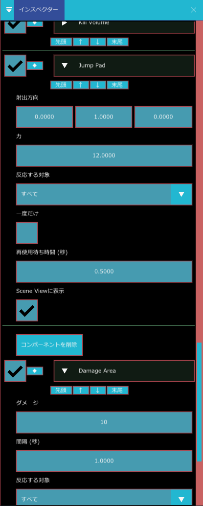
| 表示名 | 内部名 | 種類 | 既定値 | 範囲 | 説明 |
|---|---|---|---|---|---|
| 射出方向 | direction | 3 つの数 | 0, 1, 0 | 飛ばす向き。長さは関係なく、向きだけが使われます（0, 0, 0 だと飛びません） | |
| 力 | force | 小数 | 12 | 0〜1000 | 飛ばす勢い（速さ） |
| 反応する対象 | target_mask | レイヤーの選択 | すべて | 反応させる相手のレイヤー | |
| 一度だけ | one_shot | オン・オフ | オフ | オンだと、一度使われると二度と働きません | |
| 再使用待ち時間 (秒) | cooldown | 小数 | 0.5 | 0〜60 | 同じ相手に、続けて飛ばさない待ち時間 |
| Scene Viewに表示 | debug_draw | オン・オフ | オン | シーンビューに飛ぶ向きを描きます |
Damage Area（ダメージ領域）
Trigger の中にいる、Health を持つ対象へ、一定の間隔でダメージを与えます。溶岩、毒の沼、敵の接触攻撃などに使います。共通の準備が必要で、相手には Health が必要です。
| 表示名 | 内部名 | 種類 | 既定値 | 範囲 | 説明 |
|---|---|---|---|---|---|
| ダメージ | damage | 整数 | 10 | 0〜1000000 | 1 回あたりのダメージ |
| 間隔 (秒) | interval | 小数 | 1 | 0〜60 | 入ったときに 1 回、中にいる間は、この間隔ごとにダメージ |
| 反応する対象 | target_mask | レイヤーの選択 | すべて | 反応させる相手のレイヤー | |
| 一度だけ | one_shot | オン・オフ | オフ | オンだと、同じ相手には最初の 1 回だけダメージを与えます |
使い方の例：毒の沼を作る
- 沼の GameObject に Box Collider を付け、トリガー をオンにします。
- Damage Area を追加し、ダメージ を 5、間隔 を 0.5 にします。
- プレイヤーに Health を付けます。沼に入ると、0.5 秒ごとに体力が 5 減ります。
Enemy Behaviour（敵の基本挙動）
巡回・索敵・追跡・攻撃・帰還を行う、テンプレート用の敵 AI です。動き方は Nav Agent、攻撃のダメージは Damage Area と Health の仕組みを使います。
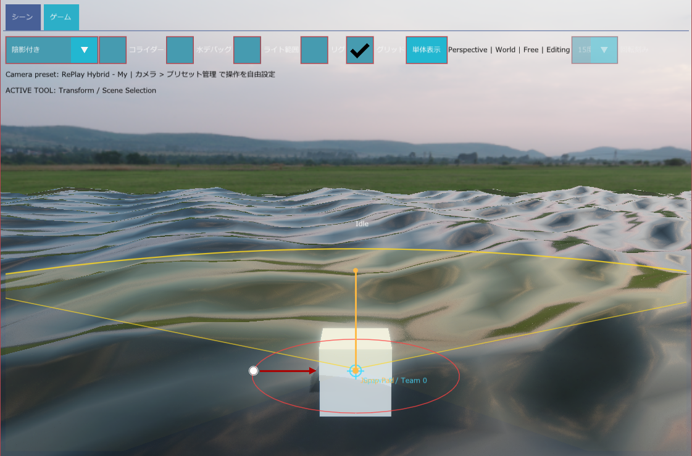
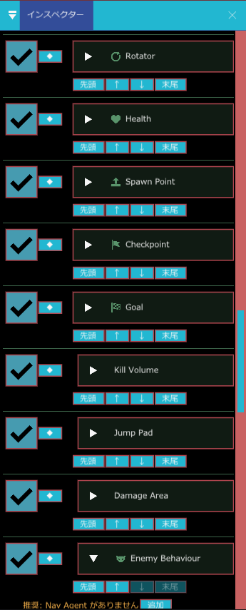
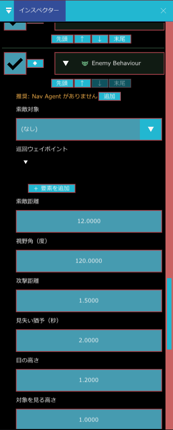
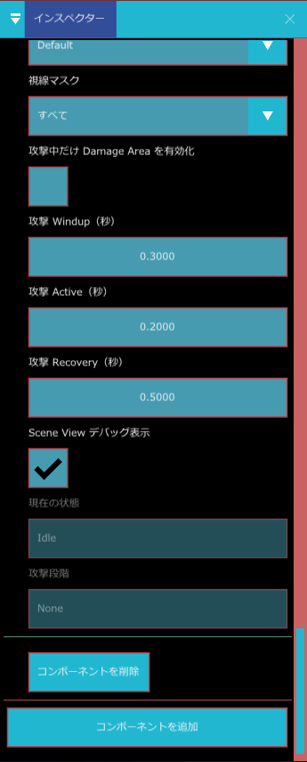
状態の流れ
| 状態 | いつなるか |
|---|---|
| Idle（待機） | 巡回ウェイポイントが無いとき、その場で待つ |
| Patrol（巡回） | ウェイポイントを順に回る |
| Chase（追跡） | 索敵対象が「索敵距離」内かつ「視野角」内に見えたとき、追いかける |
| Attack（攻撃） | 「攻撃距離」内まで近づいたとき |
| ReturnHome（帰還） | 「見失い猶予」の間見えなかったとき、最初の位置へ戻る |
| 表示名 | 内部名 | 種類 | 既定値 | 範囲 | 説明 |
|---|---|---|---|---|---|
| 索敵対象 | target | GameObject の参照 | （空） | 追いかける相手。空なら、Player Controller を持つ有効な GameObject を自動で探します | |
| 巡回ウェイポイント | patrol_waypoints | GameObject の一覧 | 0 件 | 巡回する地点。0 件なら待機します。無効な参照は読み飛ばします | |
| 索敵距離 | detection_range | 小数 | 12 | 0.05〜10000 | 対象に気づく距離 |
| 視野角（度） | field_of_view_degrees | 小数 | 120 | 0〜360 | 前方どれだけの角度を見えるとするか。360 で背後も見えます |
| 攻撃距離 | attack_range | 小数 | 1.5 | 0.05〜10000 | 攻撃を始める距離 |
| 見失い猶予（秒） | lose_sight_delay | 小数 | 2 | 0〜120 | 対象が見えなくなってから、あきらめるまでの時間 |
| 目の高さ | eye_height | 小数 | 1.2 | −100〜100 | 視線を出す高さ（足元から） |
| 対象を見る高さ | target_height | 小数 | 1 | −100〜100 | 対象のどの高さへ視線を向けるか |
| 視線レイヤー | visibility_layer | レイヤーの選択 | 0 | 視線の判定に使うレイヤー | |
| 視線マスク | visibility_mask | レイヤーの選択 | すべて | 視線を遮る物のレイヤー。壁などが含まれていると、壁の向こうは見えません | |
| 攻撃中だけ Damage Area を有効化 | attack_controls_damage_area | オン・オフ | オフ | オフは「触れたらダメージ」型で、Damage Area には一切触れません。オンだと、下の Windup → Active → Recovery のうち、Active の間だけ Damage Area を有効にします | |
| 攻撃 Windup（秒） | attack_windup_seconds | 小数 | 0.3 | 0〜30 | 攻撃の前ぶり（構え）の長さ |
| 攻撃 Active（秒） | attack_active_seconds | 小数 | 0.2 | 0〜30 | ダメージが出る時間 |
| 攻撃 Recovery（秒） | attack_recovery_seconds | 小数 | 0.5 | 0〜30 | 攻撃後のすきの長さ |
| Scene View デバッグ表示 | debug_draw | オン・オフ | オン | 索敵距離・視野などをシーンビューに描きます | |
| 現在の状態 | current_state | 表示のみ | 実行中の状態（Idle など）を表示します | ||
| 攻撃段階 | attack_phase | 表示のみ | 攻撃中の段階（Windup / Active / Recovery）を表示します |
使い方の例：プレイヤーを追いかける敵
- 敵の GameObject に Collider を付けます。Character Motor も付け、移動用 Collider を選びます。
- Nav Agent と Enemy Behaviour を追加します（Nav Agent と Damage Area は、無いと橙色で「推奨」と出ます）。
- 接触で痛い敵なら、Collider の トリガー をオンにして Damage Area を追加します。
- 巡回させるなら、道順の地点に空の GameObject を置き、巡回ウェイポイント に登録します。
- 索敵距離 と 視野角 を調整し、実行して確かめます。Scene View デバッグ表示 で範囲が見えます。
- 構えてから殴る敵にしたいときは、攻撃中だけ Damage Area を有効化 をオンにします。